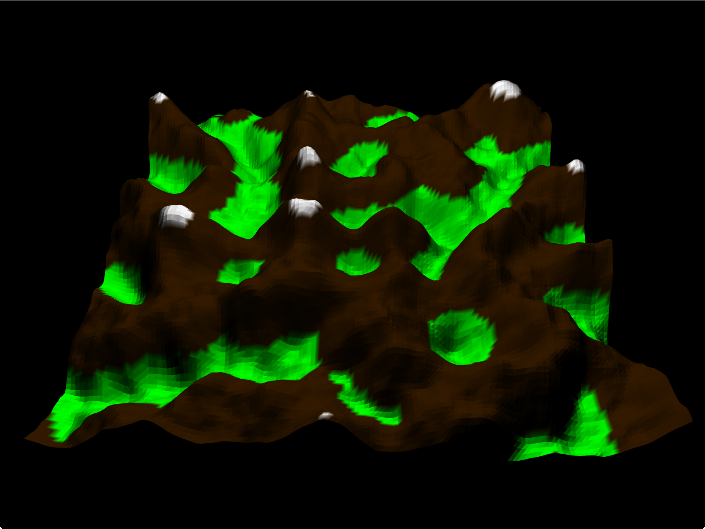
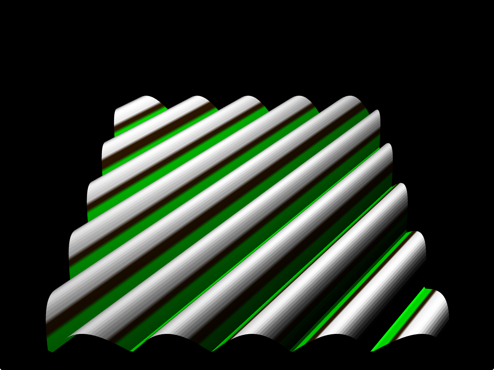
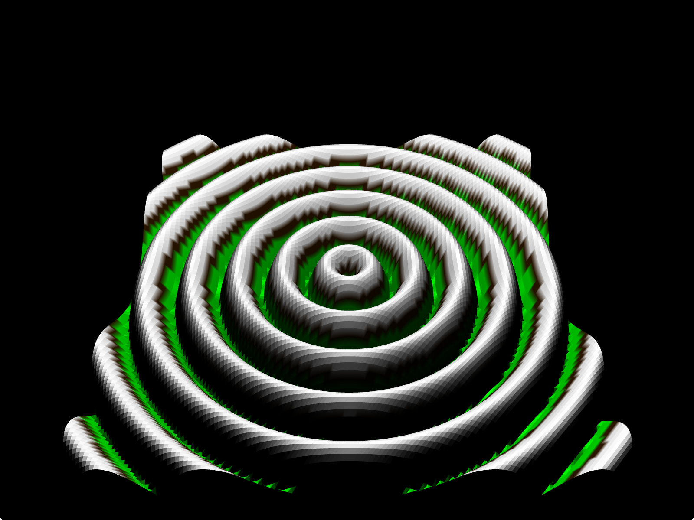
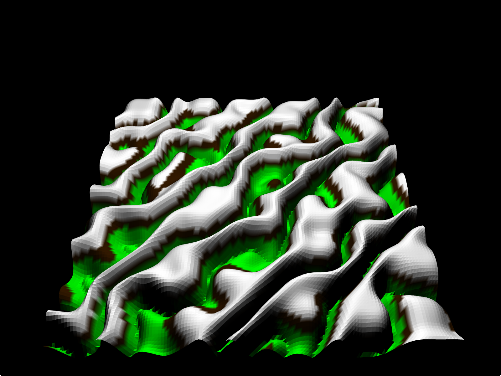
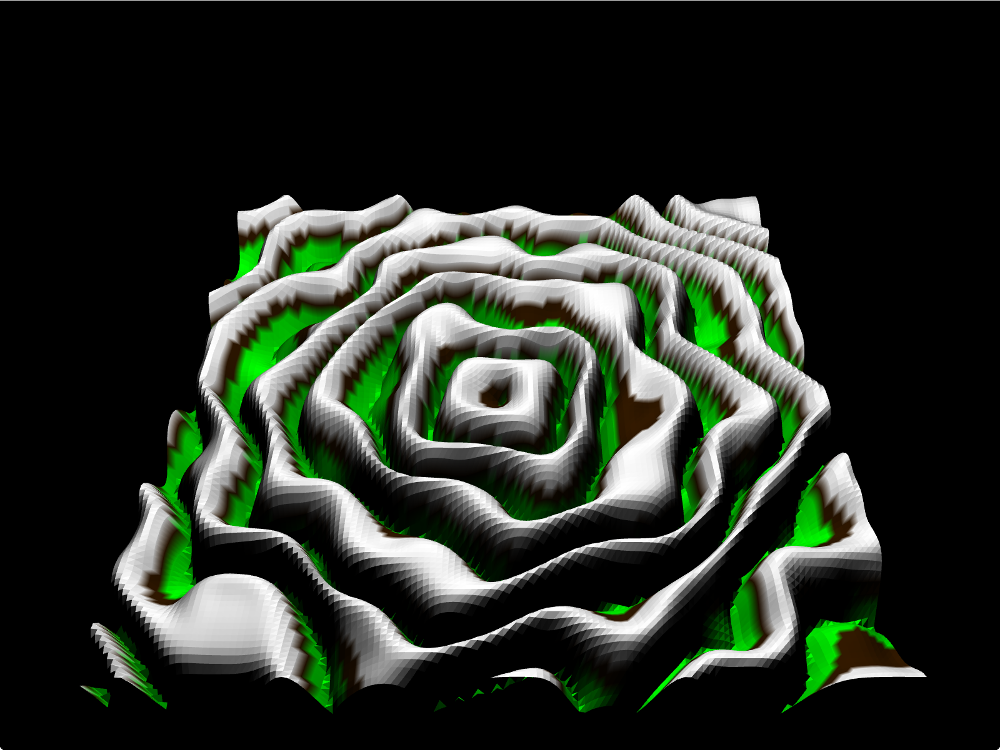

Perlin noise is a pseudo-random algorithm that produces smooth noise by combining multiple smooth noise functions. Each noise function is defined by an amplitude (range of values), frequency (period over which data is sampled) and persistence (level of influence contributed by the function). These functions are often referred to as "octaves." To create smooth noise, the values contributed by each octave are scaled by their persistence and interpolated together to produce a final noise texture with more structure than pure random noise.
Perlin noise is often used for procedural generation of natural-looking textures. The scope of its applications have ranged from movies and games to image processing. It can generate terrain, produce animated textures, model population densities, and create artistically interesting effects.
In this project, 3D Perlin noise is used to create an array of height maps.
The values in each height map are interpreted as vertex positions in space,
so that OpenGL can construct geometry to render a 3D surface. The surface is
then shaded based on the height at a particular vertex to mimic the appearance
of terrain. Finally, to animate the terrain, the current height map is swapped
out for the next map in the array which produces new geometry, creating the
appearence of dynamically changing terrain.
My project has three map types:
Terrain that has been parameterized by the user
Other map types
 Increasing the power of the functions results in more winding terrain
 Video of the user changing the height
Videos of animated terrain